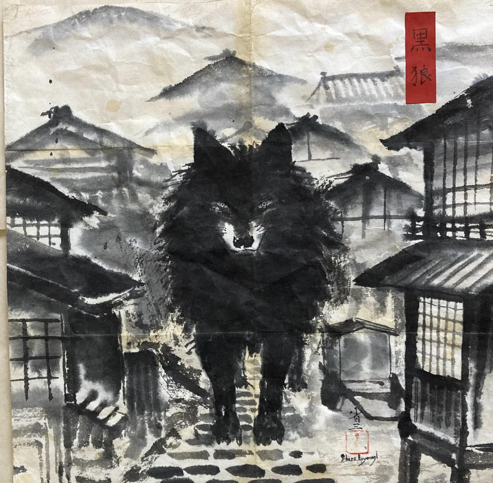
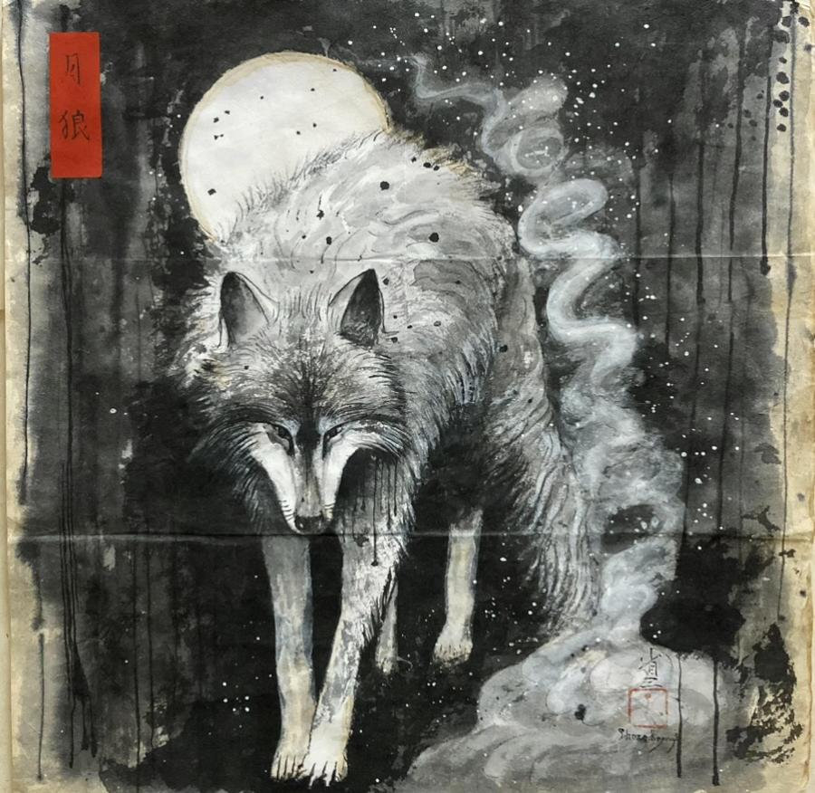
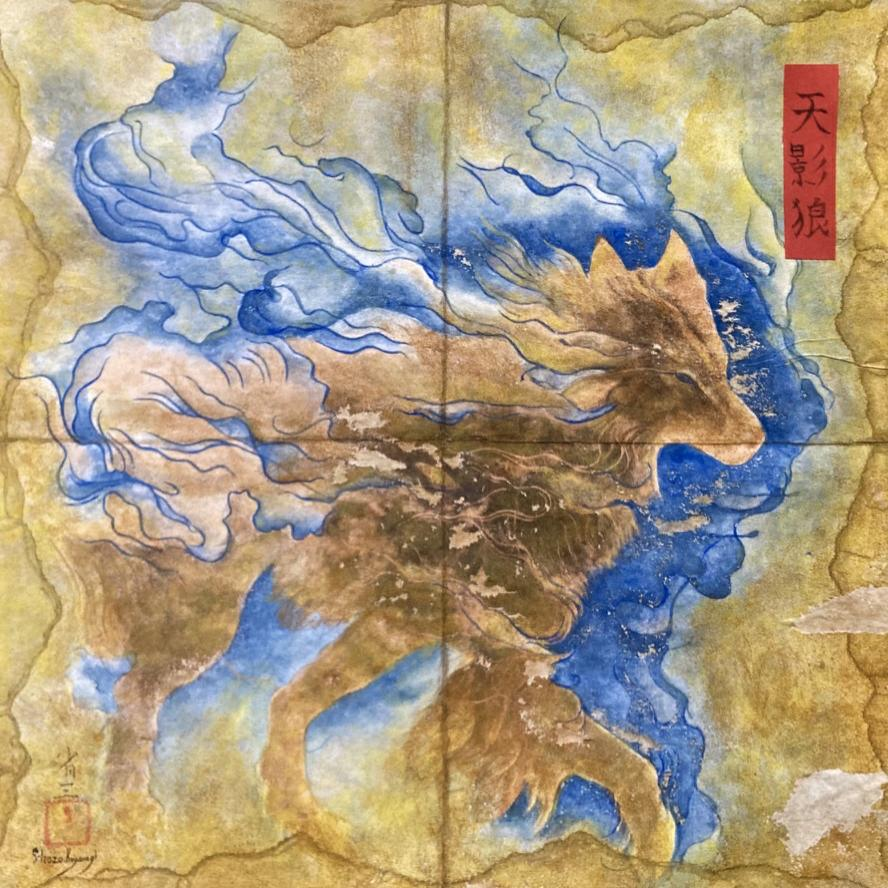
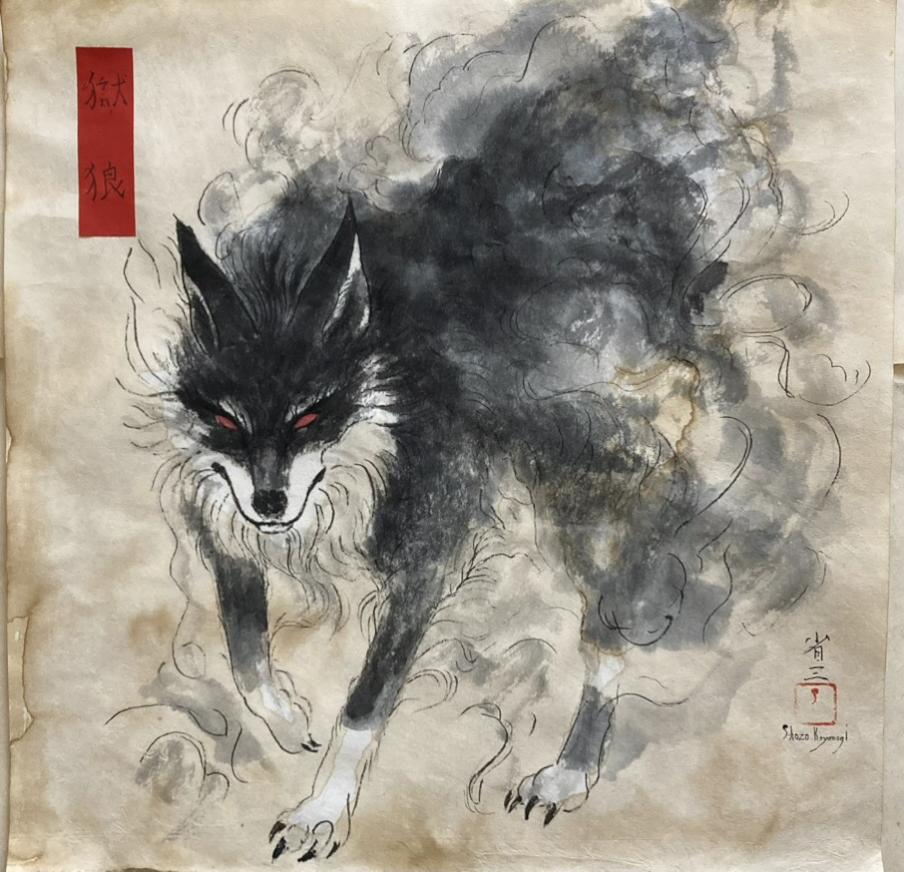
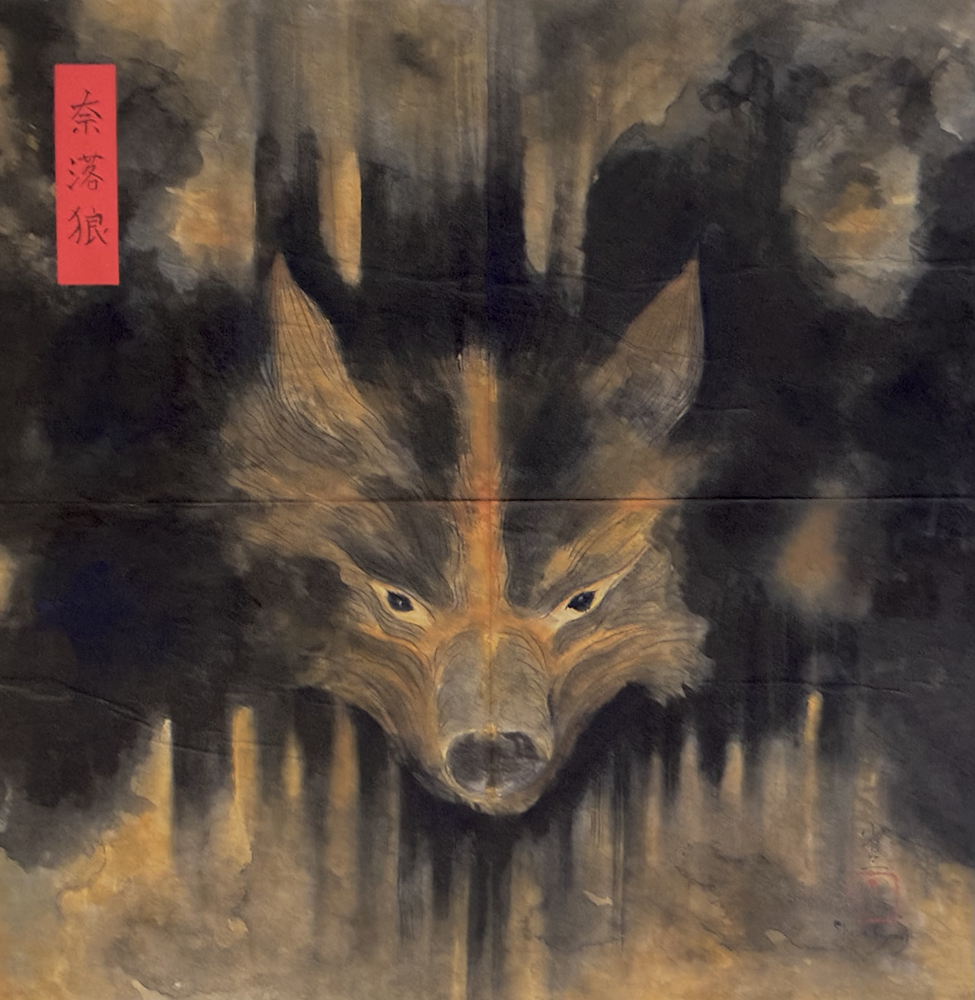

受領前の像01
やることは、これだけです。
- 黒狼を受け取る
- 放置する、または供養する
- 話しかける
それだけです。
でも、結果は同じになりません。
02
放っておくと、壊れます。
放置すれば、黒狼は陰へ傾きます。
供養すれば、陽へ向かいます。
条件によっては、月狼、天影狼、獄狼、奈落狼へと変化します。
これはゲームではありません。
ただの「変化」です。




03
それは、話します。
黒狼は、あなたに返事をします。
状態によって、声も、性格も、言葉も変わります。
時々、
あなたのことを知っているように話します。
04
自分のものとして、刻むこともできます。
黒狼は誰でも受け取れます。
ただし希望すれば、その魂をNFTとして刻むこともできます。
NFTは参加条件ではありません。
ただ、その魂が「あなたのもの」であることを残すための印です。
05
それ、ズルいよ。
一部のiNFT持ちは、少しだけ違うものを見ています。
- 見えない状態が見える。
- 他人の黒狼に触れられる。
- 起きる前の変化を知る。
彼らは強いのではありません。
ただ、羽根の子に近づきすぎているだけです。
06
供養する場所があります。
幽玄奇譚には、メタバース上の供養場があります。
そこに行き、祠に触れることで、黒狼に変化が起きます。
サイトの中だけでは終わりません。
この物語には、行く場所があります。
07
あなたは、まだ人間です。
黒狼を持つことは自由です。
放置するのも、供養するのも自由です。
ただし——
近づきすぎると、少しだけ変わります。